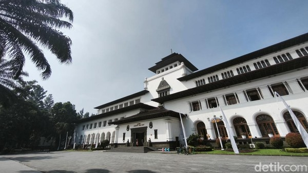
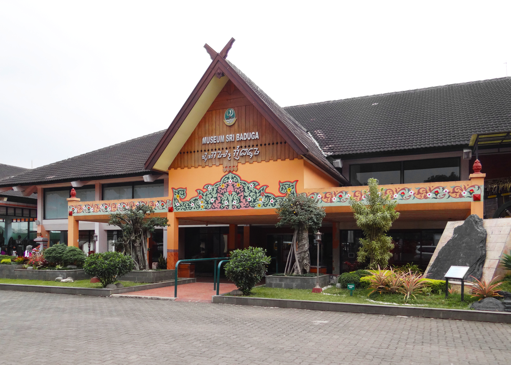
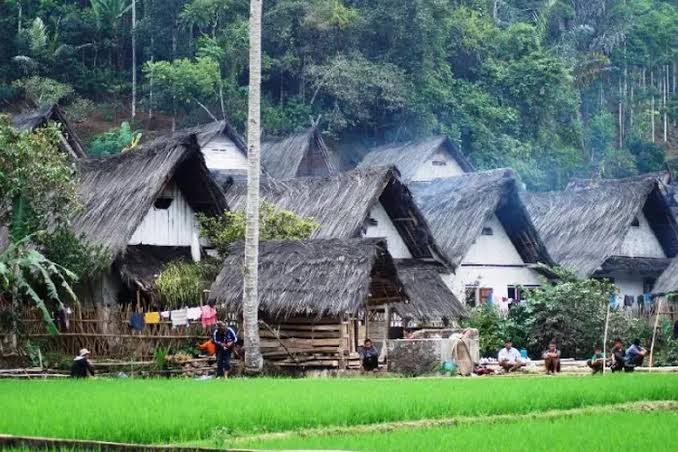

Bandung
Budaya & Sejarah Bandung.
Budaya & Sejarah Bandung.

☀︎⋆࿔:Click for the location
Gedung Sate
Gedung Sate menjadi ikon kota Bandung dengan arsitektur gaya kolonial yang khas. Bangunan ini tidak hanya menarik dari sisi visual tetapi juga menyimpan sejarah pemerintahan di Jawa Barat.
→ Rekomendasi: Kunjungi ruang-museum di bagian dalam untuk memahami sejarahnya.
☀︎⋆࿔:Click for the location

Gedung Merdeka
Gedung Merdeka adalah lokasi bersejarah karena menjadi tempat berlangsungnya Konferensi Asia‑Afrika 1955. Tempat ini cocok untuk mengenali peristiwa diplomasi dunia dan peranan Bandung di kancah global.
→ Rekomendasi: Datang pagi agar lebih leluasa melihat arsitektur dan koleksi museum di sekitarnya.
☀︎⋆࿔:Click for the location

Saung Angklung Udjo
Saung Angklung Udjo adalah pusat budaya Sunda yang didirikan untuk memperkenalkan alat musik angklung serta kesenian tradisional lainnya. Di sini kamu bukan hanya menonton tapi juga bisa ikut workshop angklung.
→ Rekomendasi: Pilih waktu pertunjukan utama dan datang sedikit lebih awal agar mendapat tempat bagus
☀︎⋆࿔:Click for the location

☀︎⋆࿔:Click for the location
Museum Sri Baduga
Museum Sri Baduga menyajikan sejarah dan budaya Sunda secara komprehensif — dari artefak arkeologi hingga seni tradisional.
→ Rekomendasi: Gunakan pemandu audio atau panduan tur untuk mendapatkan narasi yang lebih mendalam.
☀︎⋆࿔:Click for the location

☀︎⋆࿔:Click for the location
Kampung Adat Cikondang
Kampung Adat Cikondang, di Kecamatan Pangalengan, merupakan salah satu kampung adat yang masih mempertahankan rumah tradisional dan ritual budaya Sunda.
→ Rekomendasi: Jika memungkinkan, kunjungi saat ada upacara adat untuk pengalaman yang lebih autentik.
☀︎⋆࿔:Click for the location

Taman Budaya Jawa Barat
Taman Budaya Jawa Barat adalah pusat kegiatan seni dan budaya dengan pertunjukan teater, pameran seni, dan aktivitas kebudayaan lainnya.
→ Rekomendasi: Cek jadwal event sebelum datang, bisa ada pementasan menarik atau workshop yang terbuka untuk umum.
☀︎⋆࿔:Click for the location